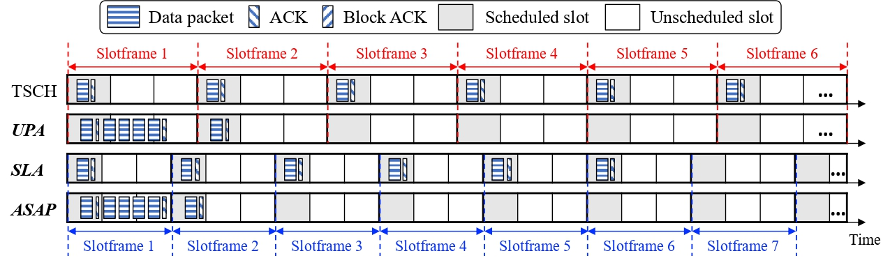

Geonhee Lee
Ph.D. Student @ NETLAB
Seoul, South Korea
I'm a second-year Ph.D. student in the Department of Electrical and Computer Engineering at Seoul National University, advised by Prof. Saewoong Bahk.
Education
- Integrated M.S./Ph.D. Program in NETLAB, Seoul National University (2021–Present)
- B.S. in Electrical and Electronic Engineering, Yonsei University (2017–2021)
- Hansung Science High School (2014–2017)
Research Interest
- Wireless Sensor Network
- Low-power wide-area network (LPWAN)
- Sensing-oriented applications in low-power networks
Publications
-
BIC-LoRa: Bits in Chirp Shapes to Boost Throughput in LoRa
[PDF]
[Slides]
Geonhee Lee, Eunjeong Park, Mingyu Park, Jeongyeop Paek, and Saewoong Bahk
ACM/IEEE International Conference on Information Processing in Sensor Networks (IPSN), 2024.

-
Cupid: Fast and Reliable Convergecast-over-UWB Protocol for Dense Internet of Things [Best Paper Nominee]
[PDF]
Jimin Park, Geonhee Lee, Jeongyeop Paek, and Saewoong Bahk
IEEE 21st Annual International Conference on Distributed Computing in Smart Systems and the Internet of Things (DCOSS-IoT), 2025.
-
Slot-Size Adaptation and Utility-Based Packet Aggregation for IEEE 802.15.4e Time-Slotted Communication Networks
[PDF]
Hongchan Kim, Geonhee Lee, Juhun Shin, Jeongyeop Paek, and Saewoong Bahk
IEEE Internet of Things Journal, vol. 11, no. 9, pp. 16382–16397, 2024.
 -
Quick6TiSCH: Accelerating Formation of 6TiSCH Networks with TSCH and RPL
[PDF]
Hongchan Kim, Geonhee Lee, Juhun Shin, Jeongyeop Paek, and Saewoong Bahk
IEEE 21st International Conference on Mobile Ad-Hoc and Smart Systems (MASS), 2024.
Awards and Honors
- Student Travel Grant, ACM/IEEE IPSN 2024
Intellectual Properties
-
KR 10-2025-0057644: LoRa communication device and the modulation and demodulation methods used by the communication device
Geonhee Lee, Eunjeong Park, Saewoong Bahk
-
KR 10-2025-0057659: Method for collecting data using concurrent transmission in ultra-wideband based multi-hop wireless networks
Jimin Park, Geonhee Lee, Saewoong Bahk
Lectures
- “Advanced Mobile Communication Systems” at SNU, Summer. 2025.
- “Advanced Mobile Communication Systems” at SNU, Summer. 2024.
- “Creative Engineering Design” at SNU, Fall. 2024.
- “Creative Engineering Design” at SNU, Fall. 2023.
- “Engineering Mathematics” at SNU, Fall. 2022.